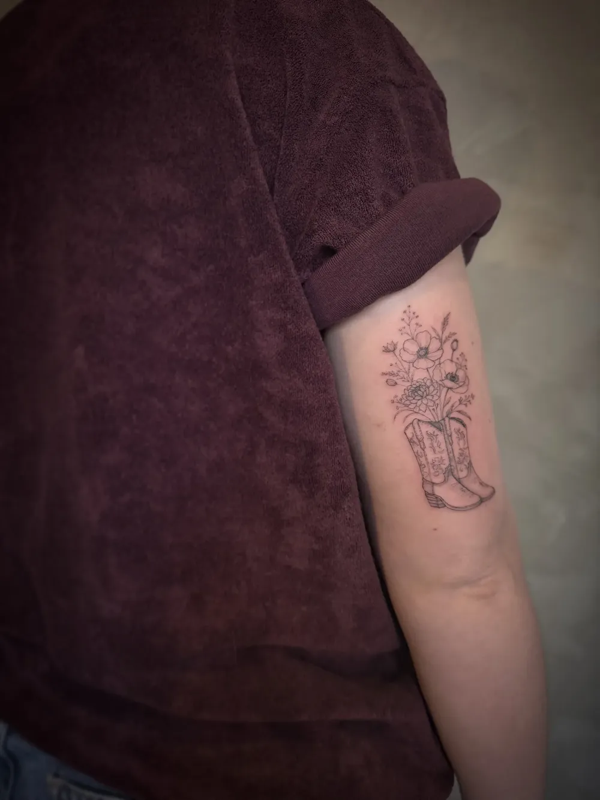
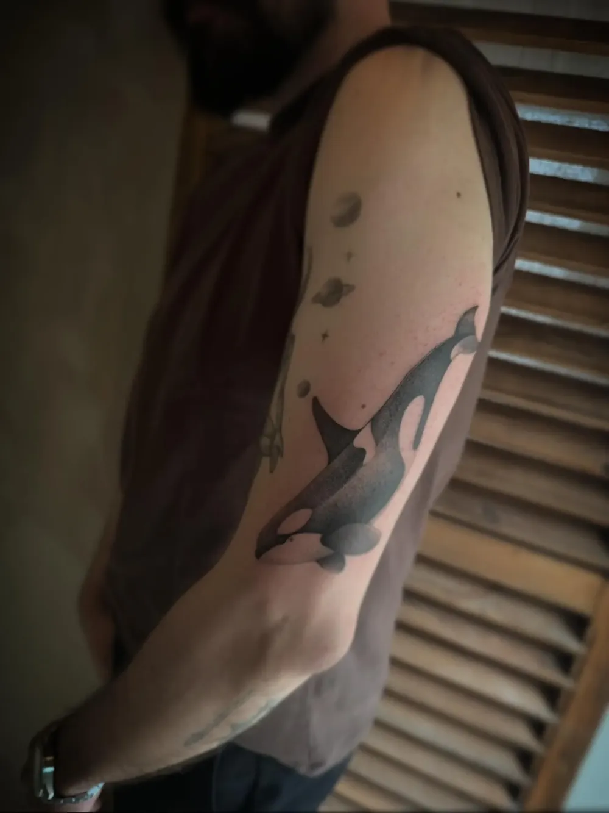
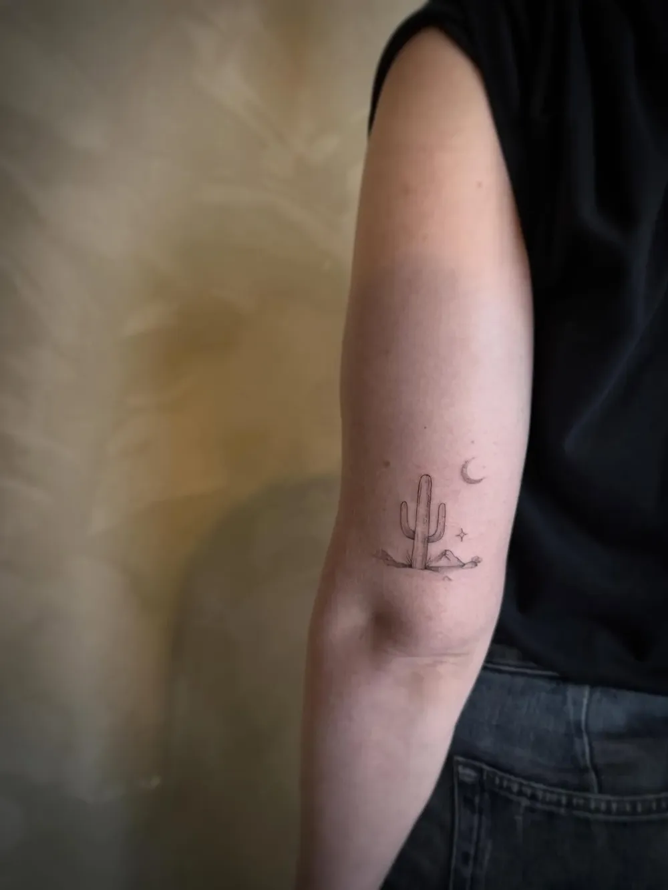
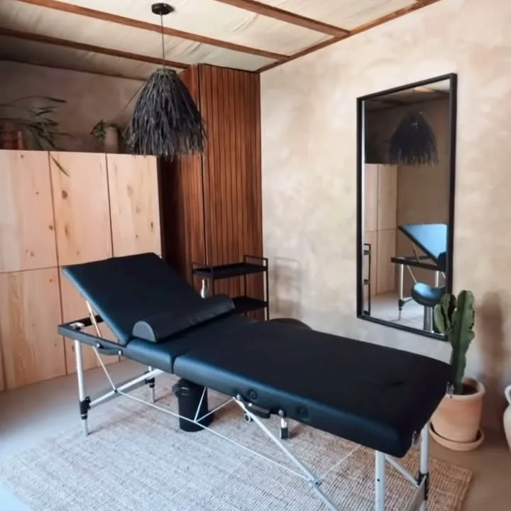

Fijne lijnen,in alle rust.
Ik ben Melissa. Ik tattoo bloemen, kleine dieren en details die je bijna van dichtbij moet bekijken. Fine line, single needle en microrealism.

Een greep uit de laatste maanden.
De meeste foto's nam ik tegen de leemmuur in de studio. Meer zie je op mijn Instagram.

Bloemen
01Van één klaproos met een lange steel tot een boeket in een paar laarzen.


Dieren
02Huisdieren in microrealism, of een orka die rond de arm zwemt.



Klein
03Een maantje, een spookkat, een martini. Klein, maar met karakter.



Minder druk, meer rust.
Wat begon als een droom, werd in 2020 een eigen studio in het centrum van Diest. Het drukke en het administratieve van een openbare studio vraten stilaan aan mijn rust.
Daarom werk ik nu in een kleine privéstudio. Ontwerpen met zorg, tatoeëren met aandacht, en tijd voor een echt gesprek.
- 2016voltijds tattoo-artiest
- 2020eigen studio in Diest
- 2025privéstudio Noa Mori

Noa betekent rust of beweging, Mori is Japans voor bos. Een stille plek waar dingen mogen groeien.
Het begint met een goeie mail.
Afspraken maak ik enkel via mail. Hoe meer je me vertelt, hoe sneller we kunnen starten. Ik neem de tijd voor elke aanvraag, dus een antwoord kan even duren.
Aan info@tattoostudiozwart.beOnderwerp: tattoo-aanvraag
- Je idee, liefst met referentiefoto's
- De plek op je lichaam
- Hoe groot ongeveer
- Een paar data die voor jou passen
- Voorschot
€ 50 of € 100, naargelang de grootte. Het wordt verrekend bij je laatste sessie en blijft een jaar geldig.
- 72 uur vooraf
Dan ligt je ontwerp vast. Kleine aanpassingen kunnen altijd, een heel ander dier op het laatste moment niet meer.
- De dag ervoor
Krijg je het adres van de privéstudio. Niets ontvangen? Stuur me gerust een herinnering.
- De dag zelf
Eet goed op voorhand en drink 24 uur ervoor geen alcohol. Iemand meebrengen mag.
Eerlijk over fine line.
Een fijne lijn staat er de eerste dag scherp. Eens genezen kan ze een beetje vervagen, dat hoort bij fine line. Wil je een tattoo die er altijd heel duidelijk staat? Kies dan voor iets dikkere lijnen. Dat zeg ik je liever op voorhand.
- Bijwerken binnen 2 maandengratis
- Bijwerken na 2 maanden€ 50
- Bijwerken na 12 maandenvanaf € 100
Lijnen dikker maken of iets toevoegen is een nieuwe afspraak, geen bijwerking.
Zo verzorg je je tattoo
Een fine line tattoo geneest meestal in 1 à 2 weken.
- Was eerst je handen. Maak de tattoo schoon met lauw water en aangepaste zeep en dep droog.
- Smeer dun in met cicaplast. De eerste 4 dagen om de 4 uur als het kan, daarna 's ochtends en 's avonds.
- Niet zwemmen, geen bad of sauna en niet langer dan 5 minuten douchen.
- Geen felle zon of zonnebank, en niet krabben, ook al jeukt het.
- Daarna: factor 50 in de zon.
Wat klanten schrijven.
op Google
"Vriendelijke dame met kennis van zaken die me een ontzettend mooie eerste tattoo plaatste. Ze nam alle tijd, was vlot bereikbaar en niets was teveel."
Sofie Laporte
"Melissa is een lieve, rustige dame die haar werk met veel passie uitvoert. Ze zoekt samen met jou naar het ontwerp zoals jij dit het liefste wilt."
Valerie De Cock
"Zeer fijne tattoo's, het volste vertrouwen, super tevreden, precies zoals we het voor ogen hadden."
Kelly Roten
Vertel me je idee.
Vrije data zet ik op mijn Instagram-verhaal. Iemand verrassen? Een cadeaubon kan ook, vraag hem gewoon per mail.